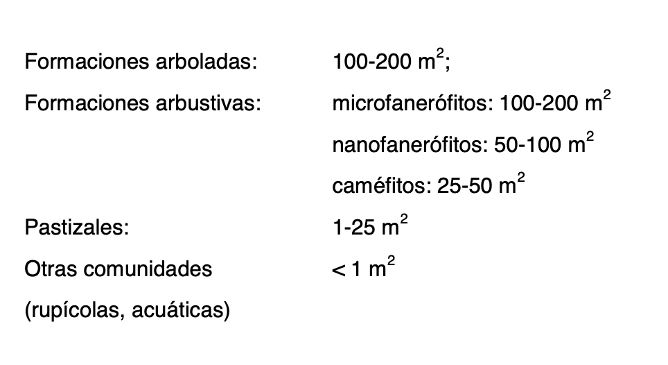
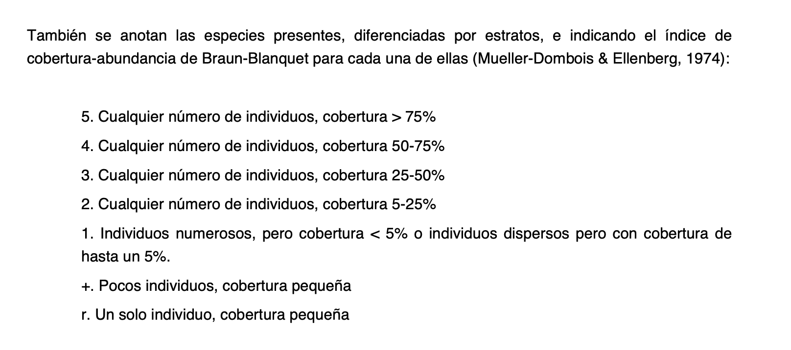
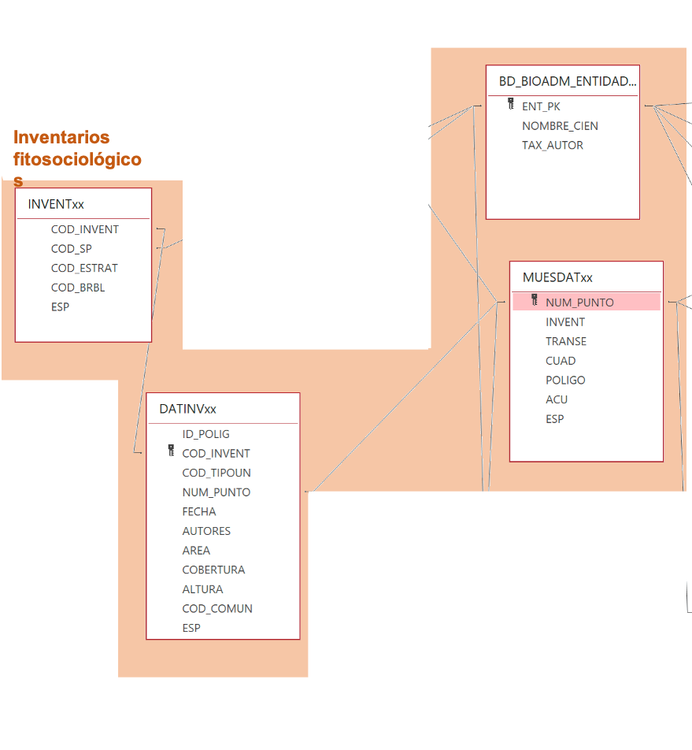
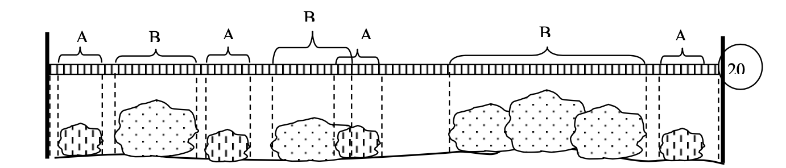
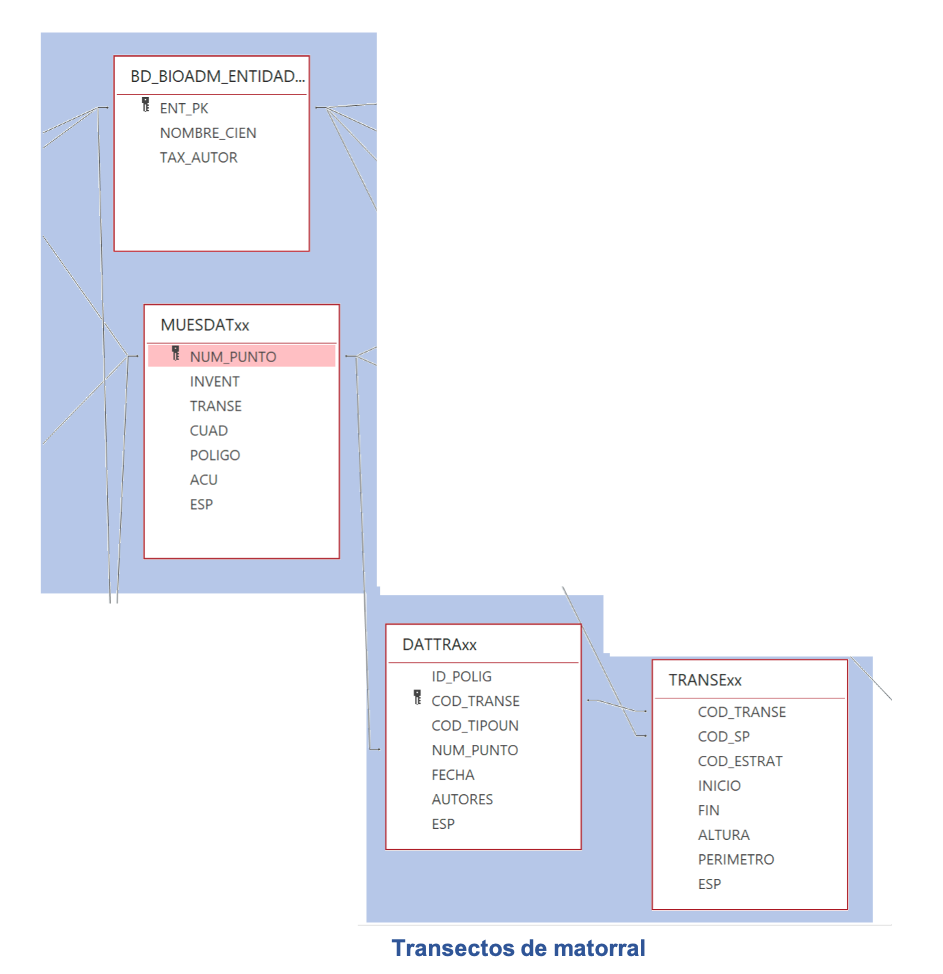
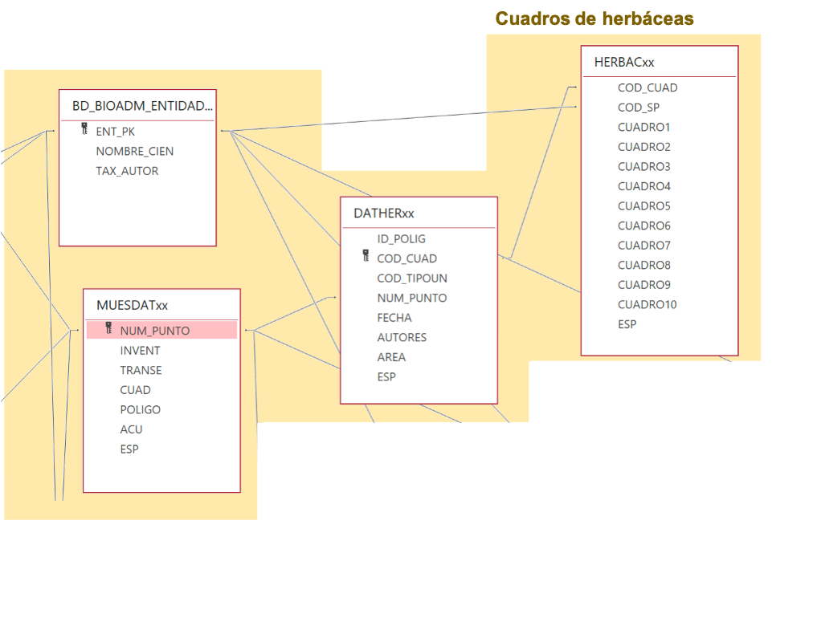
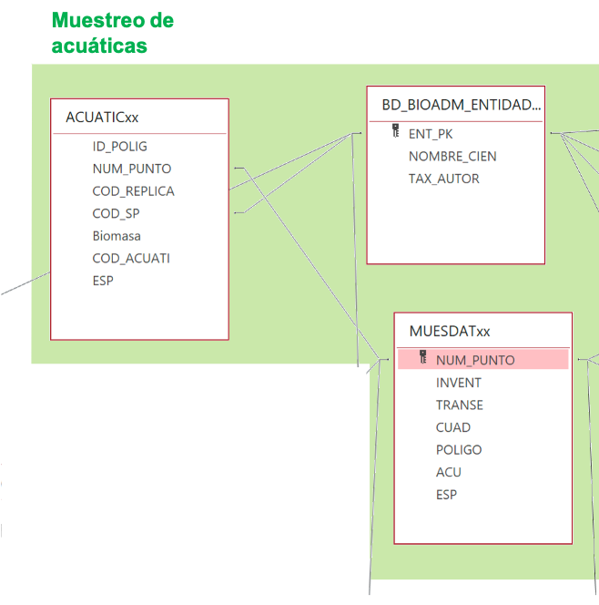
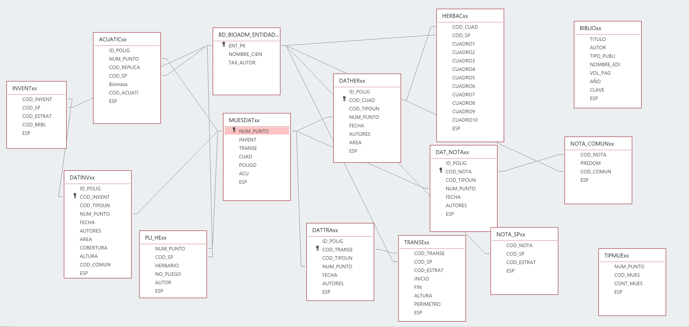

- Seminario sobre mapas de vegetación de la REDIAM
- Objetivos
- Conocer dos fuentes de información importantes para caracterizar la vegetación de Andalucía.
- Adquirir información sobre cómo se organizan dichas fuentes de datos.
- Explorar posibles usos de la información descrita.
- Fuentes de información a analizar
- Vege10
-
- Fotointerpretación de todo el territorio forestal de Andalucía.
- Foto infrarrojo. 1:20.000
- Capa vectorial dividida en sectores (NO, SE, NE, etc.)
- campos
- OBJECT_ID: Identificador del polígono.
- % Cobertura suelo (D_xxxx_PRE)
- D_ARBO_PRE: Cobertura estrato arbóreo (1-25%; 26-50%; 51-75%; 76-100%; Ausente)
- D_ARBU_PRE: Cobertura estrato arbustivo
- D_HERB_PRE: Cobertura estrato herbáceo
- D_SUEL_PRE: Cobertura suelo desnudo
- 6 especies predominante en estrato arbóreo
- Especie
- ARBOx_SP: Código de la especie arbórea con predominio x
- D_ARBOx_SP: Nombre común especie con predominio x
- Forma vital
- ARBOx_FO: Código de la forma vital de la especie arbórea con predominio x
- D_ARBOx_FO: Descripción de la forma vital de la especie arbórea con predominio x
- Naturalidad
- ARBOx_OR: Código de naturalidad de la especie x
- D_ARBOx_OR: Descripción de la naturalidad de la especie x
- 3 formaciones predominantes estrato herbáceo
- HERBx_FO: Código de la forma vital herbácea con predominio x
- D_HERBx_FO: Descripción de la forma vital herbácea con predominio x
- HERBx_OR: Código de naturalidad de la formación herbácea con predominio x
- D_HERBx_OR: Descripción de la naturalidad de la formación herbácea con predominio x
- Estrato arbustivo
- D_ARBO_PRE: Descripción cobertura estrato arbóreo Cobertura estrato arbóreo (1-25%; 26-50%; 51-75%; 76-100%; Ausente)
- 4 formaciones predominantes estrato arbustivo
- ARBUx_FO: Código de la forma vital arbustiva con predominio x
- D_ARBUx_FO: Descripción de la forma vital arbustiva con predominio x
- ARBUx_OR: Código de naturalidad de la formación arbustiva con predominio x
- D_ARBUx_OR: Descripción de la naturalidad de la formación arbustiva con predominio x
-
- Tipos
- Inventarios fitosociológicos
- Sistema de muestreo
- 
- 
- 22.023 inventarios en toda Andalucía
- Seleccionados en virtud de la diversidad florística conocida previamente y tras la fotointerpretación.
- Cómo se organiza la información
- inventarios.shp
- Puntos con la localización de los inventarios.
- Campos
- num_punt
- INVENT
- URL
- Vege10_muestreos.mdb
- MUESDATxx: Tabla central de todos los muestreos.
- NUM_PUNTO
- INVENT: Binario (1 hay, 0 no hay)
- DATINVxx: Contiene variables generales del punto de inventario
- FECHA
- AUTORES
- AREA
- COBERTURA
- ALTURA
- COD_COMUN: Código comunidad vegetal
- INVENTxx: Datos del inventario propiamente dicho.
- COD_SP: Especie inventariada
- COD_ESTRAT: Estrato de vegetación muestreado (no encuentro el diccionario)
- COD_BRBL: Código de abundancia de la especie (Braun-Blanquet)
- BD_BIOADM_ENTIDADES: Diccionario de especies y comunidades vegetales.
- Relaciones entre las tablas anteriores
- 
- Ejemplos (casos de uso)
- Datos de inventario en bruto (query: inventarios_en_bruto)
- Riqueza de especies por inventario (query: inventarios_riqueza_sp)
- Unimos las tablas resultantes de estas consultas a inventarios.shp a través del campo NUM_PUNT
- Transectos de matorral.
- Sistema de muestreo
- Estructura espacial
- Transectos de 20m en los que se caracteriza la estructura de toda la vegetación que interceptan.
- 
- Información capturada
- Especie interceptada por el transecto
- Longitud de la misma en el transecto (punto de inicio y punto de fin). En cm
- Altura del especimen (cm)
- Estrato de vegetación en el que se encuentra.
- Perímetro del especimen (cm)
- 6856 transectos en toda Andalucía
- Cómo se organiza la información
- transectos.shp
- Puntos con la localizacón de los transectos.
- Campos
- num_punt
- Vege10_muestreos.mdb
- MUESDATxx: Tabla central de todos los muestreos.
- NUM_PUNTO
- INVENT: Binario (1 hay, 0 no hay)
- DATTRAxx: Contiene información general del transecto
- FECHA
- AUTORES
- TRANSExx: Datos del transecto propiamente dichos
- COD_SP: Especie muestreada
- COD_ESTRATO: EStrato en el que está la especie
- INICIO: cm de inicio del individuo medido.
- FIN: cm de fin del individuo medido
- ALTURA: Altura del individuo.
- PERIMETRO: Perímetro del individuo
- BD_BIOADM_ENTIDADES: Diccionario de especies y comunidades vegetales.
- Relaciones entre las tablas anteriores
- 
- Ejemplos (casos de uso)
- Datos de transectos en bruto (query: transectos_en_bruto)
- Unimos las tablas resultantes de estas consultas a transectos.shp a través del campo NUM_PUNT
- Cuadros de herbáceas
- Sistema de muestreo
- Estructura espacial
- Cuadros de 30x30 cm al azar.
- Información capturada
- Se anotan las especies presentes, hasta que no se obtiene ninguna especie nueva en dos cuadros consecutivos. Si se supera el número de diez, se detiene el proceso cuando alguno de los cuadros no registra ninguna novedad.
- 6601 inventarios en toda Andalucía
- Seleccionados en virtud de la diversidad florística conocida previamente y tras la fotointerpretación.
- Cómo se organiza la información
- cuadros_herb.shp
- Puntos con la localización de los inventarios.
- Campos
- num_punt
- URL
- Vege10_muestreos.mdb
- MUESDATxx: Tabla central de todos los muestreos.
- NUM_PUNTO
- INVENT: Binario (1 hay, 0 no hay)
- DATHERxx: Contiene variables generales del punto de inventario
- FECHA
- AUTORES
- AREA
- HERBACxx: Datos del inventario propiamente dicho.
- COD_SP: Especie inventariada
- CUADROx: Presencia (1) o ausencia (0) de la especie en cuestión en el cuadro x.
- BD_BIOADM_ENTIDADES: Diccionario de especies y comunidades vegetales.
- Relaciones entre las tablas anteriores
- 
- Muestreo de acuáticas
- Sistema de muestreo
- Estructura espacial
- Puntos que no tienen su shapefile específico. Están en el general (PmuestreoVege.shp).
- Información capturada
- Especie de planta acuática.
- Biomasa según un diccionario o parámetro desconocido para mi.
- 63 inventarios en toda Andalucía
- Cómo se organiza la información
- PmuestreoVege.shp
- Puntos con la localizacón de los inventarios.
- Campos
- num_punt
- ACU: 1 si hay acuáticas.
- Vege10_muestreos.mdb
- ACUATICxx: Tabla con todos los datos capturados
- NUM_PUNTO
- COD_SP: Clave ajena con diccionario de especies.
- Biomasa: indicador de biomasa (desconocido)
- BD_BIOADM_ENTIDADES: Diccionario de especies y comunidades vegetales.
- Relaciones entre las tablas anteriores
- 
- Ejemplos (casos de uso)
- Datos de inventario en bruto (query: acuaticas_en_bruto)
- Riqueza de especies por inventario (query: acuaticas_riqueza_sp)
- Unimos las tablas resultantes de estas consultas a PmuestreoVege.shp a través del campo NUM_PUNT
- Notas de campo
- Pliegos de herbario
- Cómo se organiza la información
- Vege10_muestreos.mdb
- Contiene toda la información alfanumérica relacionada con los muestreos. Se relaciona con las capas vectoriales (puntos) de cada tipo de muestreo.
- Cuando te la bajas de la web está sin relaciones :(
- Pero yo os la paso con ellas. Aunque no hay integridad referencial porque tiene algunos problemas.
- 
- inventarios.shp
- transectos.shp
- cuadros_herb.shp
- notas_campo.shp
- PmuestreoVege.shp
- Contiene todo lo anterior más muestreos de acuáticas.
-
-